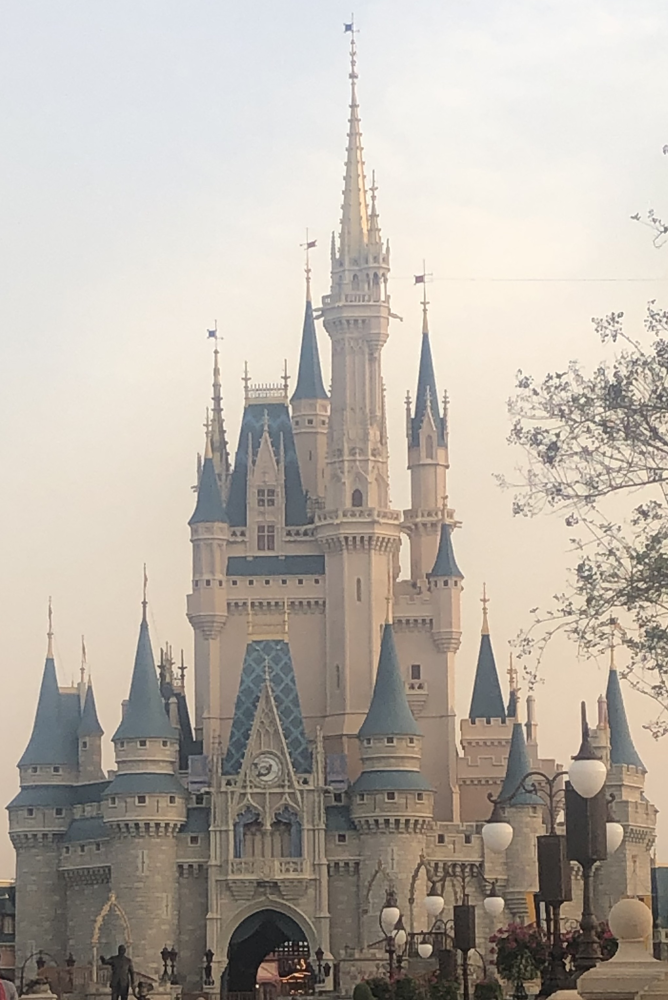
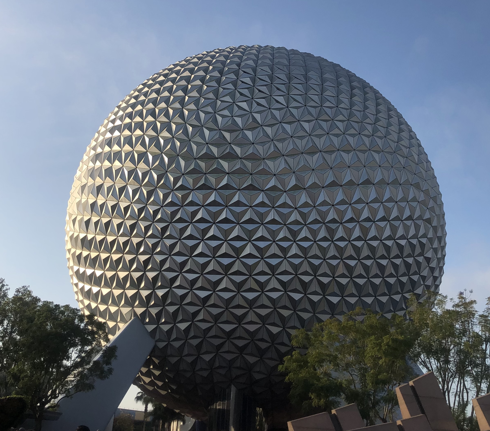

History of The Magic Kingdom

The Magic Kingdom opened on October 1, 1971 in Florida and was modeled after the original Disney park, Disneyland in California. It consists of 6 themed lands: Main Street USA, Adventureland, Liberty Square, Fantasyland, and Tomorrowland. The Magic Kingdom is one of the most visited theme parks in the world and is known for its popular mountain rides: Space Mountain, Splash Mountain, and Big Thunder Mountain Railroad, as well as the Haunted Mansion and Jungle Cruise.
History of Epcot
EPCOT stands for "Experimental Prototype Community of Tomorrow." It opened on October 1, 1982 as the second theme park at Walt Disney World. It consists of two parts: Future World and World Showcase. Future World contains a number of pavilions related to science and technology. It is home to popular rides like Soarin' and Spaceship Earth. Visitors to the World Showcase can travel through 11 themed pavilions, from Canada to China and Italy to Mexico.